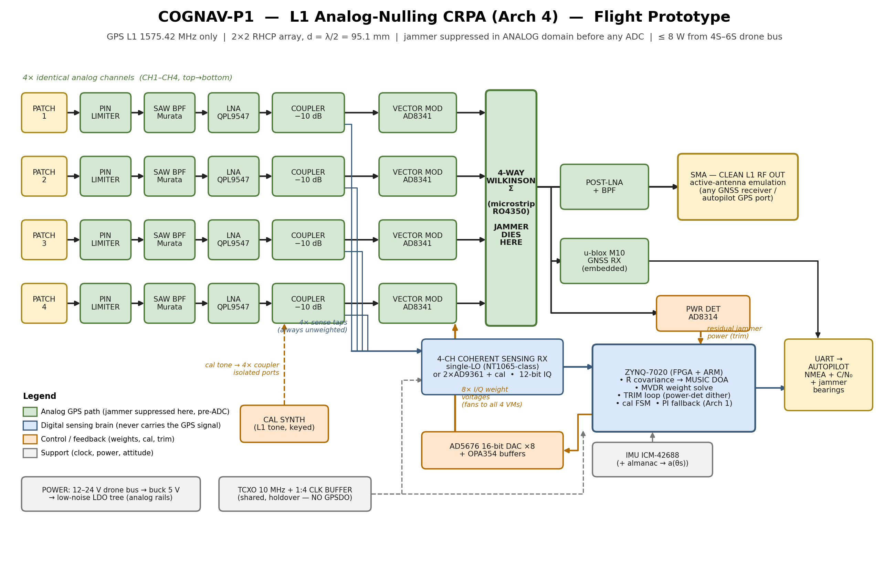
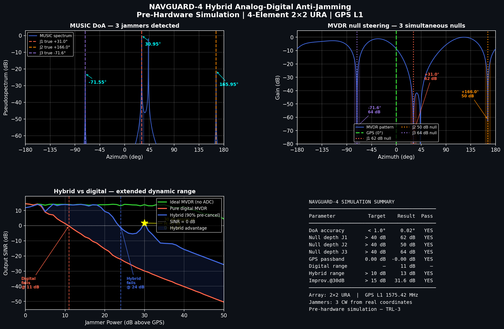
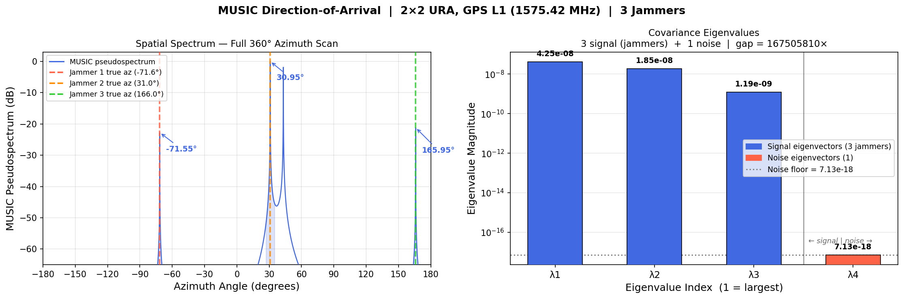
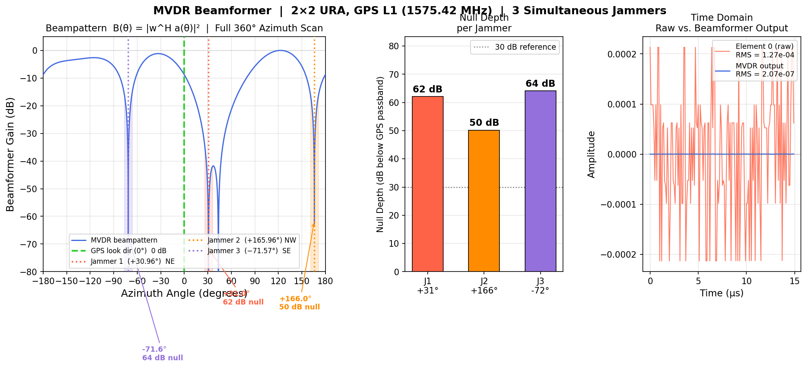
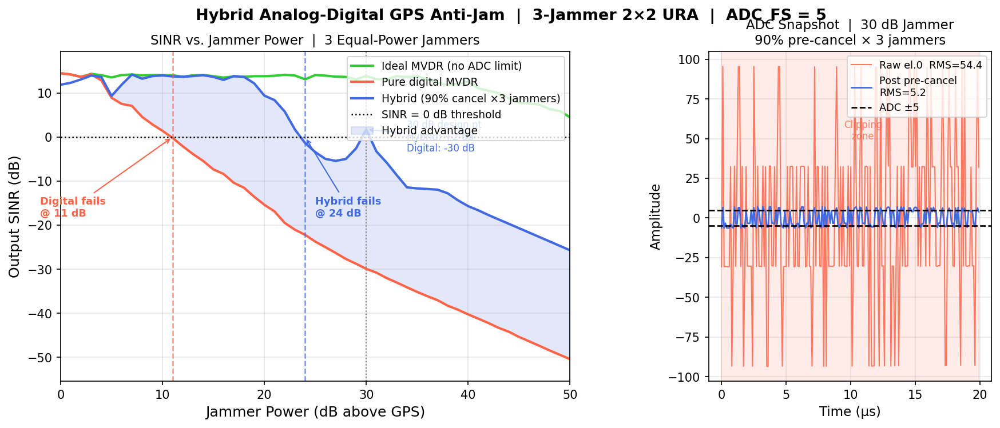
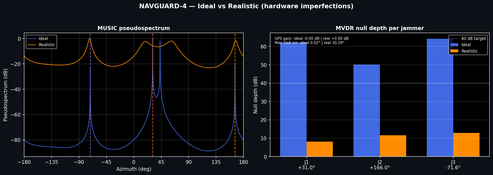

We built this to understand how a small four-antenna array can spot GPS jammers and steer "nulls" to block them while still hearing the satellites. Everything here is a software simulation — our aim was to nail down the signal processing (MUSIC and MVDR) and work out a realistic path to building it on an FPGA. The demos below are interactive, so you can explore it the way we did.
↓ Try the interactive demosGPS turns out to be surprisingly easy to jam. A cheap transmitter even ~30 dB louder than the satellite signal can knock out navigation across a wide area — which is exactly what electronic-warfare systems do to drones. We wanted to understand why a single antenna can't fix this; basically, it just can't tell the jammer apart from the real signal.
The approach we explored is using four antennas together as an array. By comparing the four signals, an algorithm called MUSIC can work out which direction each jammer comes from, and a second one called MVDR finds weights that make a blind spot toward each jammer while still listening to the GPS overhead. We also tried a hybrid analog+digital trick to cancel jammers before they overload the receiver.
Each of the four little antennas picks up the same mix of very weak GPS and very loud jammers. The useful clue is that a signal coming from one direction reaches the four antennas at slightly different moments — and that tiny timing difference is basically the signal's direction fingerprint.
GPS is unbelievably weak — about 10⁻¹⁶ watts, actually below the background noise. So each antenna gets its own amplifier straight away that boosts the signal without adding much noise of its own.
A sharp filter passes only the GPS L1 band around 1575 MHz and throws the rest away, so nearby signals can't swamp the electronics.
Each channel gets multiplied by a weight — think of it as a volume knob plus a phase-shift knob. Choosing the four weights cleverly is really the heart of the whole thing.
All four weighted signals are summed. If the weights are right, the jammer copies line up out of phase and cancel out (that's the 'null'), while GPS adds up. The jamming actually gets removed here, in the analog stage, before anything is digitized.
A tap digitizes the raw signals so the FPGA can run MUSIC to find where the jammers are and MVDR to compute the best weights — then it sets those knobs, with a little feedback loop to keep the null sharp.
What comes out the other end is ordinary GPS again, so a normal receiver locks on and finds position like nothing happened.
Because there are four antennas, we can work out the direction each signal arrives from (that's MUSIC). Direction is what lets us steer a null and actually block the jammer, so spatial monitoring drives the defence — it answers "where?" You can see it in the 3D Sky-View, the Playground and the beam pattern.
Tapping a channel and looking at its frequency content (an FFT) tells us the kind of jammer — a single tone (CW), a sweeping chirp (FMCW) or wideband noise (barrage) — and how much of the band it fills. Spectral monitoring is for identifying and reporting the threat, not for the nulling itself — it answers "what?" You can see it in the spectrum panel inside the demos. Next step: right now we only show the spectrum — automatically classifying the jammer type from it is planned, not built yet.
In short: spatial removes the jammer; spectral identifies it. A complete system does both — block the jammer by direction, and report what kind it was.

The signal chain we have in mind: four antennas → amplifiers → the vector modulators that do the analog nulling → combiner → GPS receiver, with a sensing tap feeding the FPGA that runs MUSIC and MVDR and sets the weights.
a(θ) — steering vectorThis is that 'direction fingerprint' written as numbers — the pattern of phases a signal from direction θ makes across the four antennas. It's how we turn a direction into something the maths can work with.
R = (1/N) · X·Xᴴ — covarianceA little 4×4 summary of how the four antenna signals relate to each other over N samples. Because jammers are strong, they leave obvious patterns in it.
P(θ) = 1 / ‖Uₙᴴ·a(θ)‖² — MUSICWe sweep through every possible direction θ, and this formula shoots up wherever there's actually a jammer. That's how the directions get found.
w = R⁻¹aₛ / (aₛᴴR⁻¹aₛ) — MVDRSolve for the weights that make the leftover output power as small as possible while keeping GPS at full strength. Making the power small is exactly what forces the nulls onto the jammers.
null = 20·log₁₀|wᴴaj| — null depthJust a number for how deep the blind-spot is toward a jammer (in dB). A bigger negative number means the jammer is more thoroughly blocked.
| RF front end ×4 | antenna · SAW · LNA · coupler | Each channel's analog chain — see the four rows below. |
| · Antenna ×4 | RHCP patch array | Catch the GPS + jammer signals; spaced a half-wavelength apart. |
| · Filter ×4 | SAW band-pass | Keep only the GPS L1 band; reject out-of-band interference. |
| · LNA ×4 | Qorvo QPL9547 | Amplify the faint signal with minimal added noise. |
| · Directional coupler ×4 | RF sensing tap | Split off a copy of each channel for the FPGA to analyse, without disturbing the main path. |
| Vector modulator ×4 | Analog Devices AD8341 | Apply the gain + phase weight to each channel (the analog nulling). |
| Combiner | Wilkinson 4-way | Sum the channels — the jammers cancel here. |
| Down-converter + ADC | NT1065 / AD9361 class | RF front end for the digital side: mix GPS L1 down and digitize all four channels for the FPGA. |
| FPGA / SoC | Xilinx Zynq-7020 class | Run MUSIC + MVDR + the control/trim loop. |
| DAC | Analog Devices AD5676 | Convert the computed weights to control voltages for the modulators. |
| Power detector | Analog Devices AD8314 | Measure leftover jammer power to fine-tune the null. |
| Reference clock | Shared TCXO | Keep all four channels phase-synchronised. |
| GPS receiver | u-blox M-series | Compute position from the cleaned signal. |
Getting MUSIC, MVDR and the hybrid idea working and properly understood in software. This is where we are right now — this page.
Rewrite the working simulation as tidy fixed-point C that an FPGA can actually run, with test vectors so we can check it still matches the Python.
Run it on a Zynq board — the heavy covariance maths in the FPGA fabric, MUSIC and MVDR on the ARM cores, and the computed weights sent out to the RF parts.
A little board with four patch antennas, under about 8 W, that outputs clean GPS plus some telemetry about where the jammers are.
Pick 1–3 jammers and drag their azimuths — the MVDR nulls re-steer live in your browser. The interactive 'what if' tool.
Rotatable 3D radiation pattern (dents = nulls point at jammer rays) plus az×el sky maps for MVDR and MUSIC and a polar azimuth cut.
Drag the channel-mismatch slider and watch the nulls drift off the jammers and collapse from ~50 dB to ~5 dB — the case for calibration + trim.




